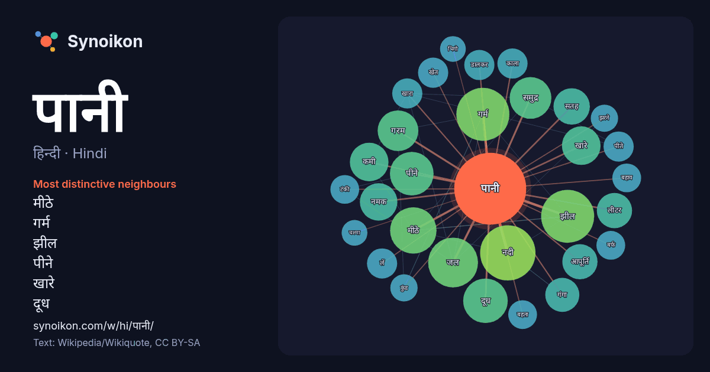

हिन्दी · Hindi · popular word
पानी
“water” · The words found around it in 1308 instances from Hindi Wikipedia, Wikiquote.

Most distinctive neighbours
- मीठे 25×
- गर्म 23×
- झील 21×
- पीने 20×
- खारे 18×
- दूध 17×
- गरम 17×
- लीटर 14×
- नमक 14×
- समुद्र 12×
- नदी 12×
- खारा 12×
- पीते 11×
- जल 11×
- डालकर 11×
- आपूर्ति 11×
- टंकी 11×
- सतह 10×
- बहता 10×
- खेत 10×
× = how many times more often than in general Hindi Wikipedia text.
Most frequent neighbours
- नदी 37
- गर्म 34
- झील 34
- जल 30
- अधिक 29
- कम 26
- मीठे 26
- रहता 26
- कारण 25
- दूध 24
- पीने 23
- स्थित 23
- समुद्र 21
- गरम 20
- कमी 18
- खारे 18
- जाने 18
- अर्थ 17
- ऊपर 17
- नमक 17
In context
- पानी H2O स्वाद में फीका होता है जबकि सोते (झरने) के पानी या लवणित जल (मिनरल वाटर) का स्वाद इनमे मिले खनिज लवणों के कारण होता है। सोते (झरने) के पानी या Wikipedia snippets · जल
- सोता या पानी का चश्मा ऐसी जगह को बोलते हैं जहाँ ज़मीन में बनी दरार या छेद से ज़मीन के भीतर के किसी जलाशय का पानी अनायास ही बाहर बहता रहता है।नौला (naula) Wikipedia snippets · पानी का चश्मा
- पान भारत के इतिहास एवं परंपराओं से गहरे से जुड़ा है। इसका उद्भव स्थल मलाया द्वीप है। पान विभिन्न भारतीय भाषाओं में अलग-अलग नामों से जाना जाता है जैसे Wikipedia snippets · पान
- दाना पानी 1989 में बनी हिन्दी भाषा की फिल्म है। मिथुन चक्रवर्ती - सत्या प्रकाश त्रिपाठी पदमिनी कोल्हापुरे निरूपा रॉय शफ़ी ईनामदार - गौतम प्रेम चोपड़ा अशोक Wikipedia snippets · दाना पानी (1989 फ़िल्म)
- पानी पूरी एक प्रसिद्ध अल्पाहार है इसे उत्तर भारत में पानी पूरी व गोलगप्पे, पूर्व भारत में फुचका या गुप चुप, दक्षिण भारत में पानी पूरी एवं पश्चिम भारत में Wikipedia snippets · पानी पूरी
- पानी काखरू सकारा एक उड़िया व्यंजन है। Wikipedia snippets · पानी काखरू सकारा
- अनेक उपयोगों में। पानी की टंकी के मानकों में टंकी की सामान्य रूपरेखा तथा निर्माण सामग्री एवं आन्तरिक परतों का चयन सम्मिलित होता है। पानी की टंकी बनाने में Wikipedia snippets · पानी की टंकी
- में उपयोग किये जाने वाले भारी पानी (ड्यूटीरियम आक्साइड-D2O) के उत्पादन के लिए मुख्य रूप से उत्तरदायी है। भारी पानी परमाणु रिएक्टर भारी पानी बोर्ड Wikipedia snippets · भारी पानी बोर्ड
More Hindi words
- इतिहास
- ईश्वर
- कार्य
- कुत्ता
- गर्मी
- गाना
- घंटी
- घड़ी
- घोड़ा
- चाय
- चित्रकला
- छाया
- जंगल
- जलवायु
- जीवन
- तूफ़ान
- दर्पण
- द्वीप
- नक्षत्र
- नमक
- परिवार
- पहाड़
- पैसा
- प्रकृति
- बगीचा
- बिल्ली
- भाषा
- भोजन
- माता
- मानचित्र
- मृत्यु
- मौन
- रेगिस्तान
- रेलगाड़ी
- रोटी
- वर्षा
- विज्ञान
- शक्ति
- शरद
- शहद
- शहर
- सड़क
- सत्य
- समय
- सर्दी
- सेतु
- स्वर्ण
- स्वास्थ्य
- हृदय
Precomputed on 2026-10-09 with default settings (±5 words, medium corpus). The interactive map can refresh it with live data.